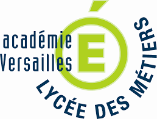

Les BTS sont des cycles d’études courtes (2 années) qui permettent d’acquérir des compétences professionnelles et de s’insérer directement sur le marché du travail. Ils permettent également de poursuivre ses études.
Adresse et accès
Adresse : 80 rue de Versailles, 91300 Massy
En transport :
- RER B ou C : station Massy-Palaiseau
- Bus 119 ou 196 : arrêt Vilgénis
- Depuis Vélizy 2 : Bus 15 (Transdev IDF)
Par la route :
- Depuis Paris : A6b sortie Massy / Longjumeau / Antony ou N20
- Depuis le Nord-Ouest : N118 sortie Massy TGV
- Depuis le Sud : N20 sortie Massy
- Depuis le Sud-Est : A6b sortie Massy / Palaiseau
- Depuis le Sud-Ouest : A10 sortie Massy / Palaiseau ou N118 sortie Massy TGV
Localisation
Les BTS proposés
| Les Brevets de Technicien Supérieur (BTS) — Filières Tertiaires | |||
|---|---|---|---|
| BTS SAM (Support à l’Action Managériale) | |||
| BTS CJN (Collaborateur Juriste Notarial) | |||
| BTS Banque | |||
| BTS CG (Comptabilité et Gestion) | |||
| BTS SIO (Services Informatiques aux Organisations) — apprentissage possible | |||
| BTS CCST (Conseil et Commercialisation de Solutions Techniques) | |||
| Les Brevets de Technicien Supérieur (BTS) — Filières Industrielles | |||
|---|---|---|---|
| BTS ATI (Assistance Technique d’Ingénieur) — apprentissage possible | |||
| BTS CIEL (Cybersécurité, Informatique et Réseaux, Électronique) — apprentissage possible | |||
| BTS CRSA (Conception et Réalisation de Systèmes Automatiques) | |||
| BTS CIM (Conception et Industrialisation en Microtechniques) | |||